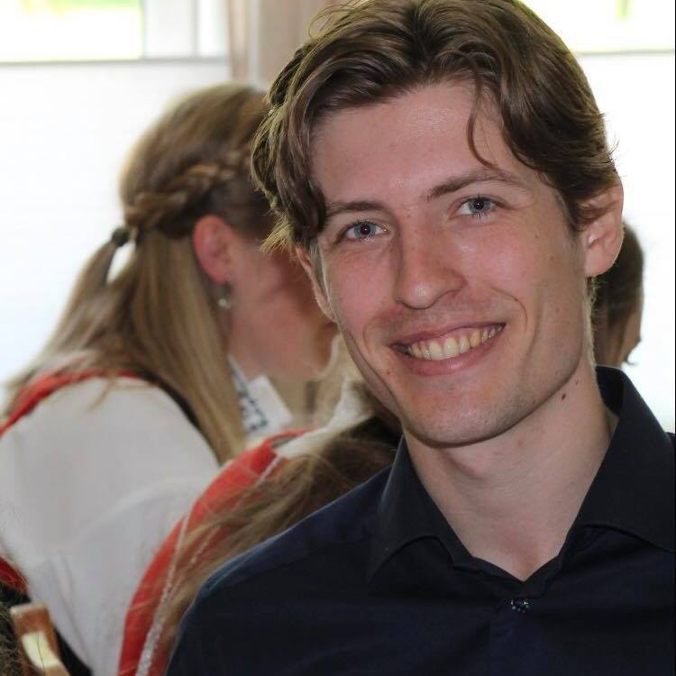

|  |
Håkon Skogland HalvorsenMaster's Student in Cybernetics and Robotics at NTNU My field of study is Navigation, Vessel Control Systems and Robot Engineering. My special interest consider Computer Vision and Maritime Cybernetics. My master thesis is about studying dynamic positioning algorithms for relative motions between a small surface vessel and a ROV. Skills Contact |
| 2015-2020 |
Cybernetics and Robotics |
| 2011-2014 |
Technical Admission |
| 2019 |
Summer Internship |
| 2018-2019 |
Teaching Assistant |
| 2018 |
Head |
| 2017 |
Technical Responsible at Badminton |
| 2016-2017 |
Deputy Head |